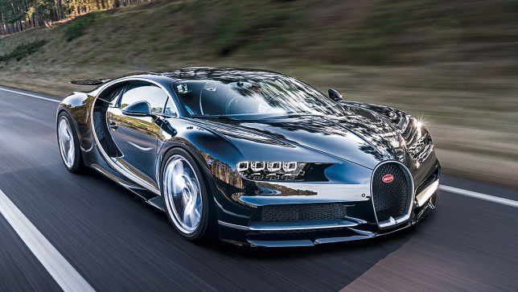
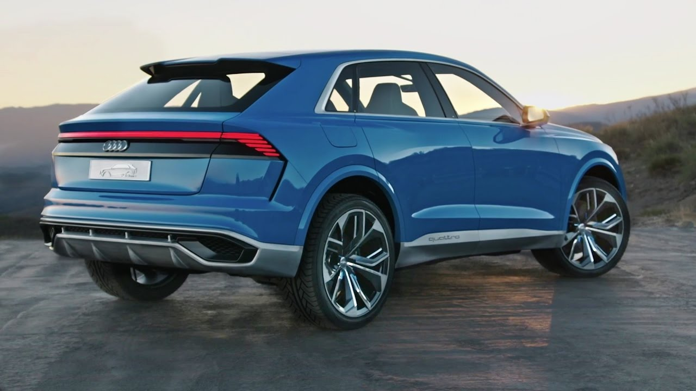

Інтер'єр Туарега виконаний витончено і з претензією на люксовий шик
Присутня велика кількість систем безпеки: автоматичне відстеження стану водія, 6 фронтальних і бічних подушок безпеки плюс ще одна, під ногами водія. В наявності система автоматичного гальмування, відзначено практично повна відсутність пробуксовки. Інформація буде виводитися на якісному моніторі. Доступна регулювання висоти рульової колонки, кермо володіє великою кількістю налаштувань.
Фольксваген Туарег 2017 обзаведеться сучасними круїз-контролем, електронним приводом дзеркал і спліт-системою на дві зони. Топове оснащення буде, крім перерахованого, включати в себе передній і задній парктронік, асистент спуск/підйом і інші корисні функції. Також в збірці T-Prime багато функцій буде можливо задіяти через голосові або жестові команди (можливо, ця можливість буде реалізована і в серійної моделі).
2. Bugatti Chiron

Накануне открытия Женевского автосалона компания Bugatti представила свой новый суперкар Chiron, поднявший планку самого быстрого серийного авто, сообщает Carscoops.
Новинка может похвастаться 8-литровым двигателем W16 мощностью в 1500 лошадиных сил. Максимальная скорость автомобиля составит 420 км/ч, при этом для того, чтобы ее достичь, необходимо задействовать отдельный ключ, активирующий функции, улучшающие аэродинамику автомобиля. В обычном режиме электроника ограничит скорость Chiron 380 км/ч.
Audi Q8

Динамичный, высокоэффективный, исключительно комфортабельный: Audi представляет концепт-кар Audi Q8 на Североамериканском международном автосалоне (NAIAS) 2017 года. С этой моделью автопроизводитель премиум-класса входит в новый сегмент полноразмерных автомобилей, которые предлагают элегантную альтернативу суровым и универсальным классическим кроссоверам. Концепт-кар Audi Q8 — символ престижа. Он гармонично сочетает характерную для SUV вместительность с эмоциональностью и выразительностью купе. Его высокоэффективный привод plug-in hybrid обладает суммарной мощностью 449 л. с. и крутящим моментом 700 Н·м. Концепт-кар станет основой для серийной модели, которую Audi планирует вывести на рынок в 2018 году.